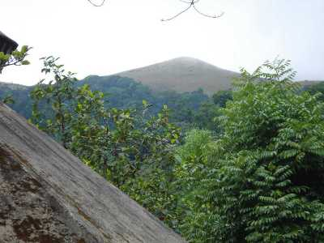

Ranipuram
The gentle hills of Ranipuram in Kerala are famous for its trekking trail. Situated at the height of about 750 meters above sea level
Malom Wildlife Sanctuary
A popular tourist attraction of Kanhagad region, Malom Wildlife Sanctuary is all about lush green tropical green forest and variety of wildlife.
Ashtamudi Lake
Cheruvathur is a popular picnic spot which is famous for poets and scholars of Kuttamath family.

Nileshwar
Nileshwar is the cultural capital town of Kasaragod district. It is also spelled as Nileswaram by the local people